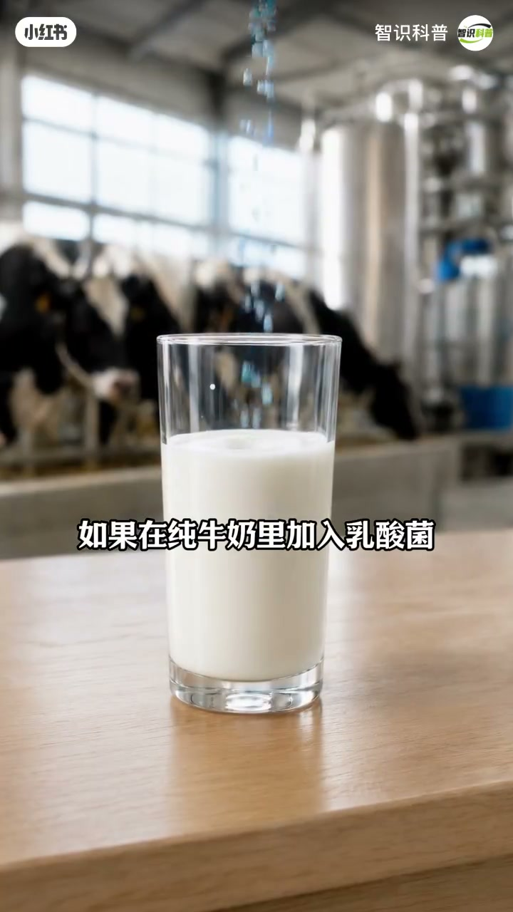
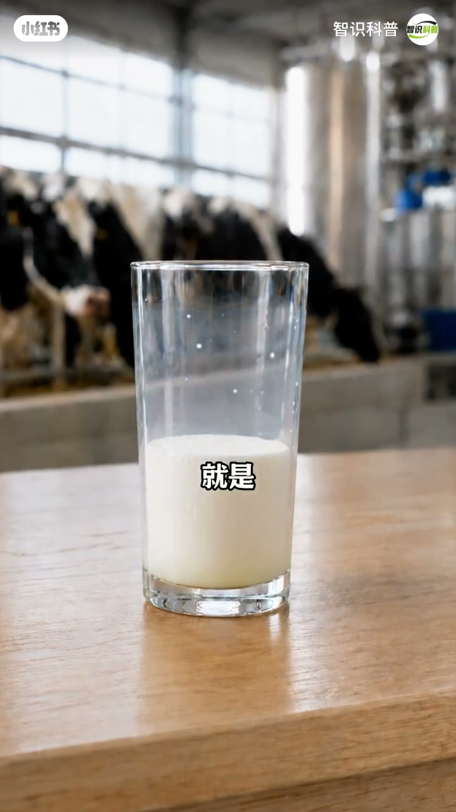
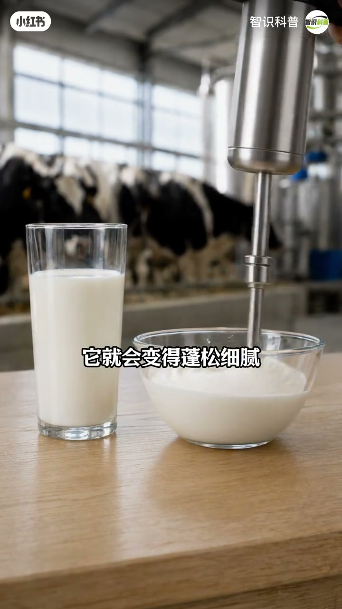
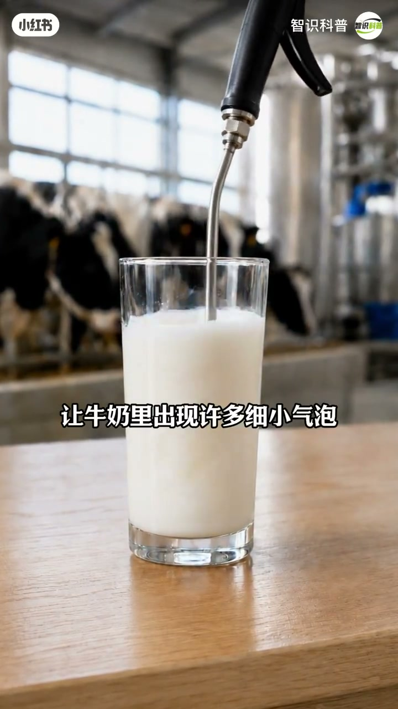

内容要点
知识结构
[00:00→00:50]
变化过程铺垫
动画展示牛奶从液态走向可打发状态的过程（口播残缺，依画面）。
[00:60→00:66]
气泡与绵密
出现细小气泡，变得更加绵密厚实。
[00:66→00:68]
定义奶泡
可浮在咖啡或饮品上，这就是奶泡。
总结
奶泡=牛奶被引入大量细小气泡后的绵密态，所以能浮在咖啡上。
图文实录
动画铺垫
00:00 – 00:50
前大半段以动画演示牛奶变化，Whisper前段残缺；观众先看到形态演变，再听定义。

[00:08]开场动画：牛奶开始发生变化
Opening animation: milk begins to change

[00:26]中段：加工/打发过程的可视化
Middle: visualizing processing/frothing
气泡出现
00:50 – 00:64
口播补齐关键物理事实：细小气泡让牛奶变得绵密厚实。
牛奶里出现许多细小气泡
变得更加绵密厚实

[00:43]质地变绵密厚实：气泡起作用
Texture turns dense and creamy as fine bubbles form
这就是奶泡
00:64 – 00:68
可浮在咖啡或饮品上面——完成日常概念锚定。
可以浮在咖啡或饮品上面
这就是奶泡

[01:00]收束：浮在咖啡上的就是奶泡
Close: what floats on coffee is milk foam